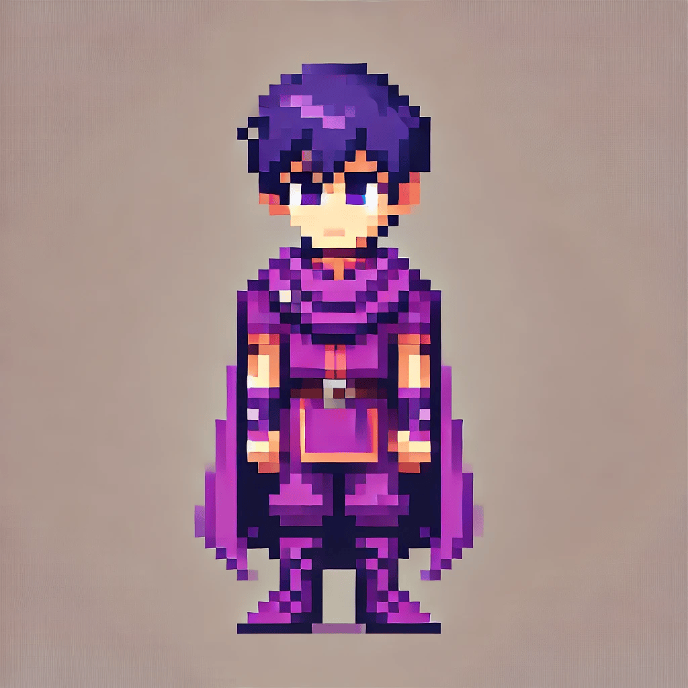

After Ellie returned home with the eternal bond, the kingdom of Willowmere held a funeral for Ellie’s beloved feline companion, Molly. Whilst grieving, the caretaker of Willowmere castle reveals to Ellie that the castle graveyards hold a very old secret which could bring Molly back from the dead. In a brand new adventure, explore the entirety of the never-seen-before grounds of Willowmere Castle and help all the castle staff whilst also looking for hidden rooms and clues that could reveal dark and long forgotten secrets about King Aldric
Our hero, Ellie! 